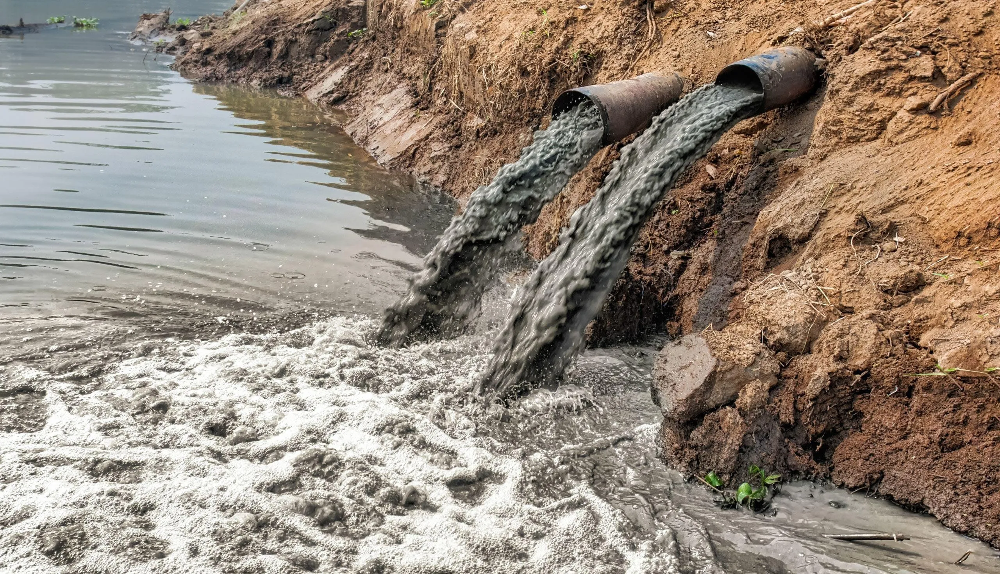
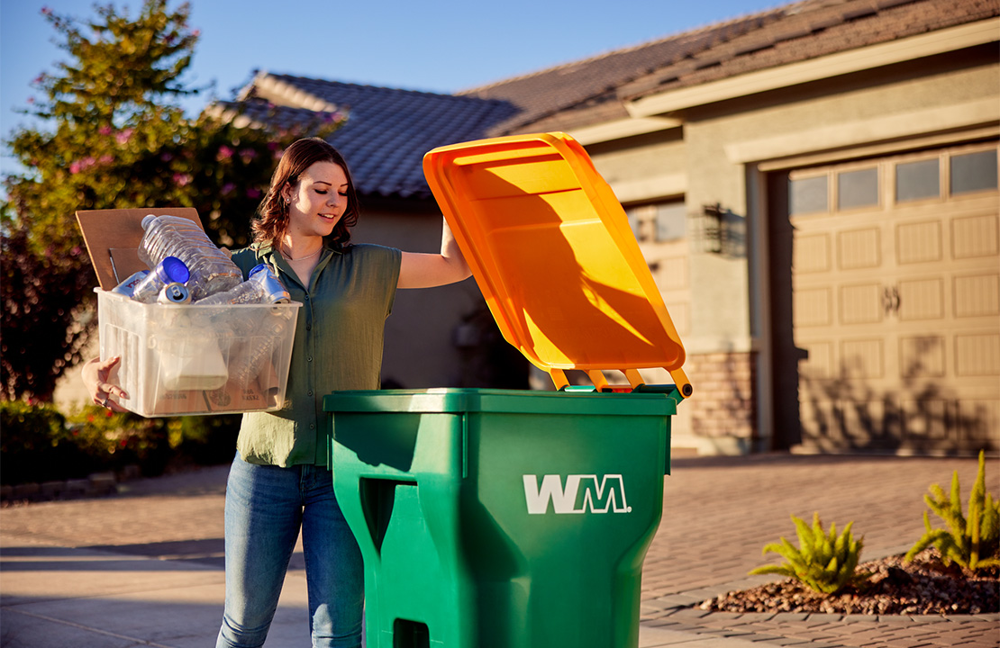
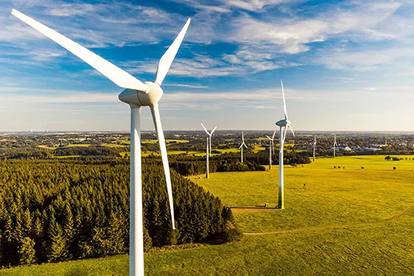
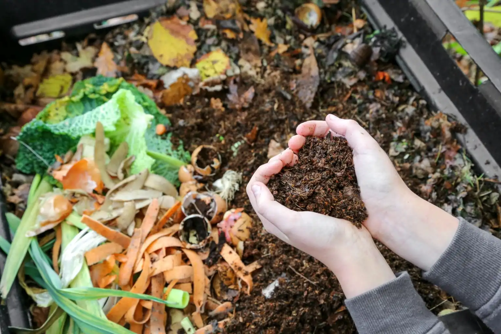

If you have already read our articles and you want to test your knowledge, there are some quizzes to take that will test you on what you've learned.
Image courtesy of pexels.com
|  | Pollution and Greenhouse Gasses Quiz |
|---|---|
|
This 25-question quiz will quiz you on pollution and greenhouse gases and will cover what pollutants are out there, where do they come from, and how they harm our environment. Quick Link to Pollution and Greenhouse Gasses Quiz Image courtesy of quench.culligan.com |
| Waste |  |
|---|---|
|
This 50-question quiz will quiz on the waste we produce, where they come from, and how we can resolve waste issues. Quick Link to Waste Quiz |
|  | Deforestation |
|---|---|
|
This 20-question quiz will quiz you on deforestation and will cover the causes and effects of deforestation. Quick Link to Deforestation Quiz |
| Greenwashing |  |
|---|---|
|
This 25-question quiz will quiz you on greenwashing and help you know how to spot greenwashing ahead of time. Quick Link to Greenwashing Quiz |
| Renewable Energy Quiz | |
|---|---|
|
This 30-question quiz will quiz you on the variety of types of renewable energy, such as solar, wind, and hydroelectric, and their advantages and disadvantages. Quick Link to Renewable Energy Quiz Image courtesy of quench.culligan.com |
| Green Infrastructures | |
|---|---|
|
This 20-question quiz wil quiz you on the different types of green infrastructure and their benefits. Quick Link to Green Infrastructure Quiz |
|
|
Info: |
How Can I Help? |
Take a Quiz |